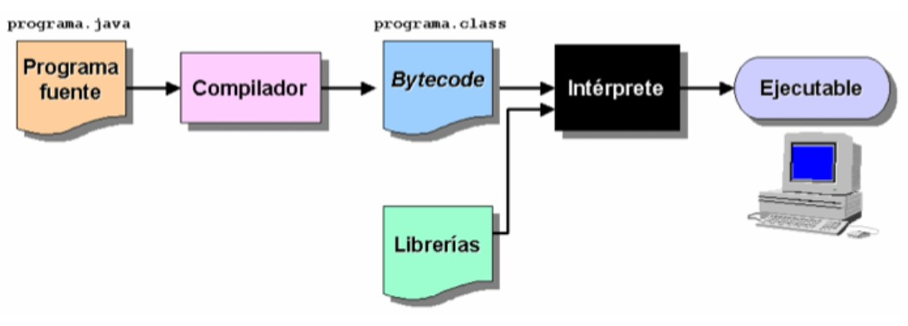

El lenguaje de programación Java
Java es un lenguaje sencillo de aprender, con una sintaxis parecida a la de C++ (C plus plus.), pero en la que se han eliminado elementos complicados y que pueden originar errores. Java es orientado a objetos, con lo que elimina muchas preocupaciones al programador y permite la utilización de gran cantidad de bibliotecas ya definidas, evitando reescribir código que ya existe. Es un lenguaje de programación creado para satisfacer nuevas necesidades que los lenguajes existentes hasta el momento no eran capaces de solventar.
Una de las principales virtudes de Java es su independencia del hardware, ya que el código que se genera es válido para cualquier plataforma. Este código será ejecutado sobre una máquina virtual denominada Máquina Virtual Java (MVJ o JVM – Java Virtual Machine), que interpretará el código convirtiéndolo a código específico de la plataforma que lo soporta. De este modo el programa se escribe una única vez y puede hacerse funcionar en cualquier lugar. Por eso, ese es el lema del lenguaje: “Write once, run everywhere”.
Antes de que apareciera Java, el lenguaje C era uno de los más extendidos por su versatilidad. Pero cuando los programas escritos en C aumentaban de volumen, su manejo comenzaba a complicarse. Mediante las técnicas de programación estructurada y programación modular se conseguían reducir estas complicaciones, pero no era suficiente.
Fue entonces cuando la Programación Orientada a Objetos (POO) entra en escena, aproximando notablemente la construcción de programas al pensamiento humano y haciendo más sencillo todo el proceso. Los problemas se dividen en objetos que tienen propiedades e interactúan con otros objetos, de este modo, el programador puede centrarse en cada objeto para programar internamente los elementos y funciones que lo componen.
1. Breve historia
Java surgió en 1991 cuando un grupo de ingenieros de Sun Microsystems trataron de diseñar un nuevo lenguaje de programación destinado a programar pequeños dispositivos electrónicos. La dificultad de estos dispositivos es que cambian continuamente y para que un programa funcione en el siguiente dispositivo aparecido, hay que rescribir el código. Por eso la empresa Sun quería crear un lenguaje independiente del dispositivo.
Pero no fue hasta 1995 cuando pasó a llamarse Java, dándose a conocer al público como lenguaje de programación para computadores. Java pasa a ser un lenguaje totalmente independiente de la plataforma y a la vez potente y orientado a objetos. Esa filosofía y su facilidad para crear aplicaciones para redes TCP/IP ha hecho que sea uno de los lenguajes más utilizados en la actualidad.
El factor determinante para su expansión fue la incorporación de un intérprete Java en la versión 2.0 del navegador Web Netscape Navigator, lo que supuso una gran revuelo en Internet. A principios de 1997 apareció Java 1.1, que proporcionó sustanciales mejoras al lenguaje.
Java 1.2, más tarde rebautizado como Java 2, nació a finales de 1998.
El principal objetivo del lenguaje Java es llegar a ser el nexo universal que conecte a los usuarios con la información, esté ésta situada en el ordenador local, en un servidor Web, en una base de datos o en cualquier otro lugar.
Para el desarrollo de programas en lenguaje Java es necesario utilizar un entorno de desarrollo denominado JDK (Java Development Kit), que provee de un compilador y un entorno de ejecución (JRE – Java Runtime Environment) para los bytecodes generados a partir del código fuente. Al igual que las diferentes versiones del lenguaje han incorporado mejoras, el entorno de desarrollo y ejecución también ha sido mejorado sucesivamente.
Java 2 es la tercera versión del lenguaje, pero es algo más que un lenguaje de programación, incluye los siguientes elementos:
- Un lenguaje de programación: Java.
- Un conjunto de bibliotecas estándar que vienen incluidas en la plataforma y que son necesarias en todo entorno Java. Es el Java Core.
- Un conjunto de herramientas para el desarrollo de programas, como es el compilador de bytecodes, el generador de documentación, un depurador, etc (etcétera.).
- Un entorno de ejecución que en definitiva es una máquina virtual que ejecuta los programas traducidos a bytecodes.
El siguiente esquema muestra los elementos fundamentales de la plataforma de desarrollo Java 2. Actualmente hay varias ediciones de la plataforma Java, que puedes ver en el siguiente enlace, y que de forma muy resumida podríamos clasificar en:
- Java SE (Standard Edition): es la plataforma base para desarrollo de aplicaciones en Java. Es usado para desarrollar aplicaciones de escritorio, applets y otros tipos de aplicaciones. Es fundamental, dado que es la base sobre la que se cimientan el resto de plataformas Java.
- Java EE: es una plataforma de desarrollo para aplicaciones empresariales y del lado del servidor.
- Java ME: es una plataforma de desarrollo de aplicaciones Java para dispositivos móviles.
2. La POO y Java
En Java, los datos y el código (funciones o métodos) se combinan en entidades llamadas objetos. El objeto tendrá un comportamiento (su código interno) y un estado (los datos). Los objetos permiten la reutilización del código y pueden considerarse, en sí mismos, como piezas reutilizables en múltiples proyectos distintos. Esta característica permite reducir el tiempo de desarrollo de software.
Por simplificar un poco las cosas, un programa en Java será como una representación teatral en la que debemos preparar primero cada personaje, definir sus características y qué va a saber hacer. Cuando esta fase esté terminada, la obra se desarrollará sacando personajes a escena y haciéndoles interactuar.
Al emplear los conceptos de la Programación Orientada a Objetos (POO), Java incorpora las tres características propias de este paradigma:
- Encapsulación,
- Herencia,
- Polimorfismo.
Los patrones o tipos de objetos se denominan clases y los objetos que utilizan estos patrones o pertenecen a dichos tipos, se identifican con el nombre de instancias. Pero, no hay que alarmarse, estos conceptos se verán más adelante en sucesivas unidades.
Otro ejemplo para seguir aclarando ideas, piensa en los bloques de juegos de construcción. Suponemos que conoces los cubos de plástico en varios colores y tamaños. Por una de sus caras disponen de pequeños conectores circulares y en otra de sus caras pequeños orificios en los que pueden conectarse otros bloques, con el objetivo principal de permitir construir formas más grandes. Si usas diferentes piezas del lego puedes construir aviones, coches, edificios, etc (etcétera.). Si te fijas bien, cada pieza es un objeto pequeño que puede unirse con otros objetos para crear objetos más grandes.
Pues bien, aproximadamente así es como funciona la programación dirigida a objetos: unimos elementos pequeños para construir otros más grandes. Nuestros programas estarán formados por muchos componentes (objetos) independientes y diferentes; cada uno con una función determinada en nuestro software y que podrá comunicarse con los demás de una manera predefinida.
3. Independencia de la plataforma y trabajo en red
Existen dos características que distinguen a Java de otros lenguajes, como son la independencia de la plataforma y la posibilidad de trabajar en red o, mejor, la posibilidad de crear aplicaciones que trabajan en red.
Estas características las vamos a explicar a continuación:
- Independencia: los programas escritos en Java pueden ser ejecutados en cualquier tipo de hardware. El código fuente se compila, generándose el código conocido como Java Bytecode (instrucciones máquina simplificadas que son específicas de la plataforma Java), el bytecode será interpretado y ejecutado en la Máquina Virtual Java (MVJ o JVM – Java Virtual Machine) que es un programa escrito en código nativo de la plataforma destino, entendible por el hardware. Con esto se evita tener que realizar un programa diferente para cada CPU (Unidad Central de Proceso) o plataforma.
- Por tanto, la parte que realmente es dependiente del sistema es la Máquina Virtual Java, así como las librerías o bibliotecas básicas que permiten acceder directamente al hardware de la máquina.
- Trabajo en red: esta capacidad del lenguaje ofrece múltiples posibilidades para la comunicación vía TCP/IP. Para poder hacerlo existen librerías que permiten el acceso y la interacción con protocolos como http, ftp, etc. (etcétera.), facilitando al programador las tareas del tratamiento de la información a través de redes.
4. Seguridad y simplicidad
Junto a las características diferenciadoras del lenguaje Java relacionadas con la independencia y el trabajo en red, han de destacarse dos virtudes que hacen a este lenguaje uno de los más extendidos entre la comunidad de programadores: su seguridad y su simplicidad.
- Seguridad: en primer lugar, los posibles accesos a zonas de memoria “sensibles” que en otros lenguajes como C y C++ (C plus plus.) podían suponer peligros importantes, se han eliminado en Java. Y en segundo lugar, el código Java se comprueba y verifica para evitar que determinadas secciones del código produzcan efectos no deseados. Los test que se aplican garantizan que las operaciones, operandos, conversiones, uso de clases y demás acciones son seguras. En definitiva, podemos afirmar que Java es un lenguaje seguro.
- Simplicidad: aunque Java es tan potente como C o C++ (C plus plus.), es bastante más sencillo. Posee una curva de aprendizaje muy rápida y, para alguien que comienza a programar en este lenguaje, como será el caso de la mayoría de quienes comienzan a estudiar este módulo, le resulta relativamente fácil comenzar a escribir aplicaciones interesantes.
Si has programado alguna vez en C o C++ (C plus plus.) encontrarás que Java te pone las cosas más fáciles, ya que se han eliminado: la aritmética de punteros, los registros, la definición de tipos, la gestión de memoria, etc (etcétera.). Con esta simplificación se reduce bastante la posibilidad de cometer errores comunes en los programas. Un programador experimentado en C o C++ (C plus plus.) puede cambiar a este lenguaje rápidamente y obtener resultados en muy poco espacio de tiempo.
Muy relacionado con la simplicidad que aporta Java está la incorporación de un elemento muy útil como es el Recolector de Basura (Garbage collector). Permite al programador liberarse de la gestión de la memoria y hace que ciertos bloques de memoria puedan reaprovecharse, disminuyendo el número de huecos libres (fragmentación de memoria).
Cuando realicemos programas, crearemos objetos, haremos que éstos interaccionen, etc (etcétera.). Todas estas operaciones requieren de uso de memoria del sistema, pero la gestión de ésta será realizada de manera transparente al programador. Todo lo contrario que ocurría en otros lenguajes. Podremos crear tantos objetos como solicitemos, pero nunca tendremos que destruirlos. El entorno de Java borrará los objetos cuando determine que no se van a utilizar más. Este proceso es conocido como recolección de basura, y simplifica tu trabajo al programar una barbaridad.
5. Java y los Bytecodes
Un programa escrito en Java no es directamente ejecutable, es necesario que el código fuente sea interpretado por la Máquina Virtual Java. ¿Cuáles son los pasos que se siguen desde que se genera el código fuente hasta que se ejecuta? A continuación se detallan cada uno de ellos.
Una vez escrito el código fuente (archivos con extensión .java), éste es precompilado generándose los códigos de bytes, Bytecodes o Java Bytecodes (archivos con extensión .class) que serán interpretados directamente por la Máquina Virtual Java y traducidos a código nativo de la plataforma sobre la que se esté ejecutando el programa.
Bytecode: son un conjunto de instrucciones en lenguaje máquina que no son específicas para ningún procesador o sistema de cómputo. Un intérprete de código de bytes (bytecodes) para una plataforma específica será quien los ejecute. A estos intérpretes también se les conoce como Máquinas Virtuales Java o intérpretes Java de tiempo de ejecución.
En el proceso de precompilación, existe un verificador de códigos de bytes que se asegurará de que se cumplen las siguientes condiciones:
- El código satisface las especificaciones de la Máquina Virtual Java.
- No existe amenaza contra la integridad del sistema.
- No se producen desbordamientos de memoria.
- Los parámetros y sus tipos son adecuados.
- No existen conversiones de datos no permitidas.
Para que un bytecode pueda ser ejecutado en cualquier plataforma, es imprescindible que dicha plataforma cuente con el intérprete adecuado, es decir, la máquina virtual específica para esa plataforma. En general, la Máquina Virtual Java es un programa de reducido tamaño y gratuito para todos los sistemas operativos.
| Concepto | Descripción |
|---|---|
| Código fuente (.java) | Archivo escrito por el programador en Java. |
| Bytecode (.class) | Código intermedio generado por el compilador, independiente de la plataforma. |
| JVM | Máquina Virtual Java que interpreta el bytecode y lo ejecuta en la plataforma específica. |